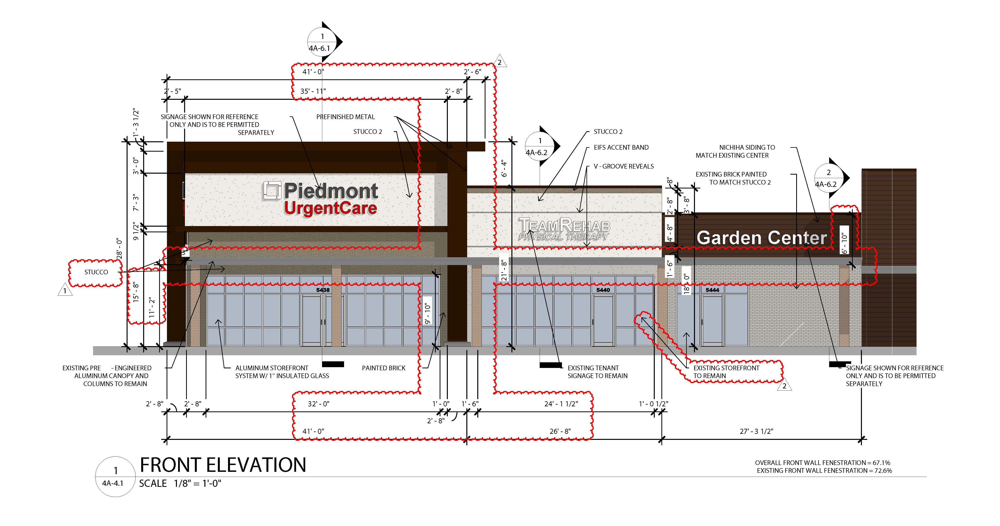

Chamblee Plaza Corner Shops
Architect - Hiscutt & Associates
Developer - Trinity Development Group, Inc.
Role - Project Designer
Part of a retail redevelopment in Chamblee, Georgia, including a Publix core and shell. This section of the project scope focuses on the corner shops renovation consisting of a Piedmont Urgent Care and two additional retail bays. The scope of work was core and shell with warm / dark interiors ready for leasing to tenants. This was primarily a shell renovation with intention to preserve as much of the existing structure as possible. Major roof repairs were undertaken as part of this scope, including new downspouts, additional reinforcing to support kickers for the extended parapet, and resurfacing. Additionally, existing finishes were removed and updated to align with city design standards and the design precedent set by the Publix exterior being permitted concurrently. These designs extended the fibercement board finish on the front of the corner shops and installation of new storefront systems for two of the three tenant spaces. The Piedmont Urgent Care facade was raised to capture the end of the storefront, new pilasters were added, and a new EIFS finish system was applied.
